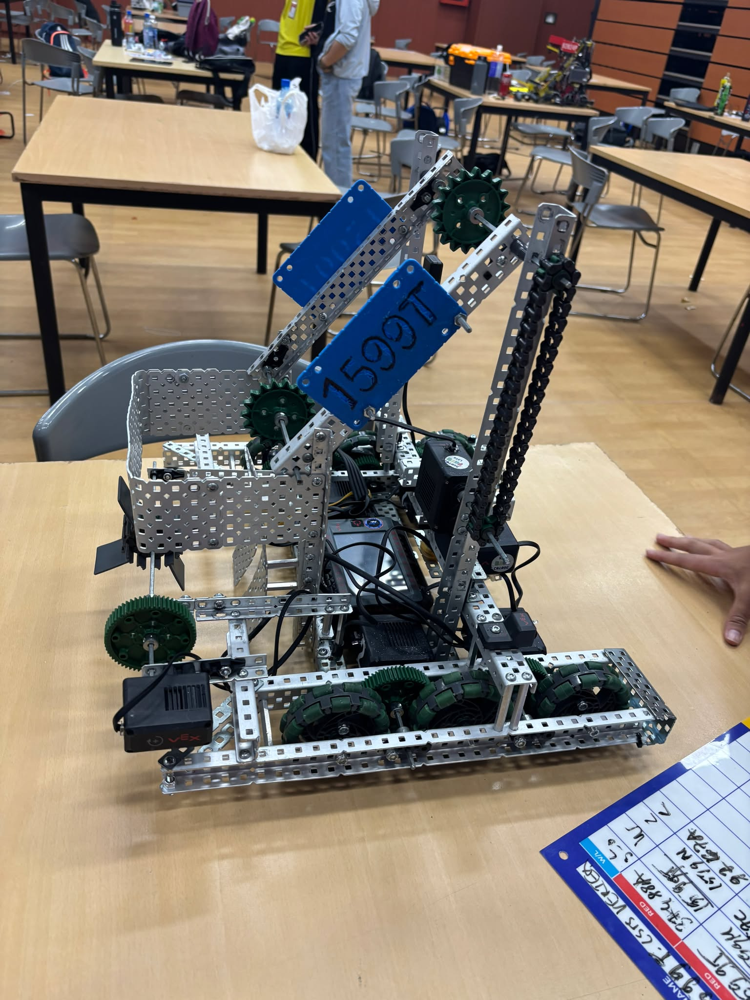
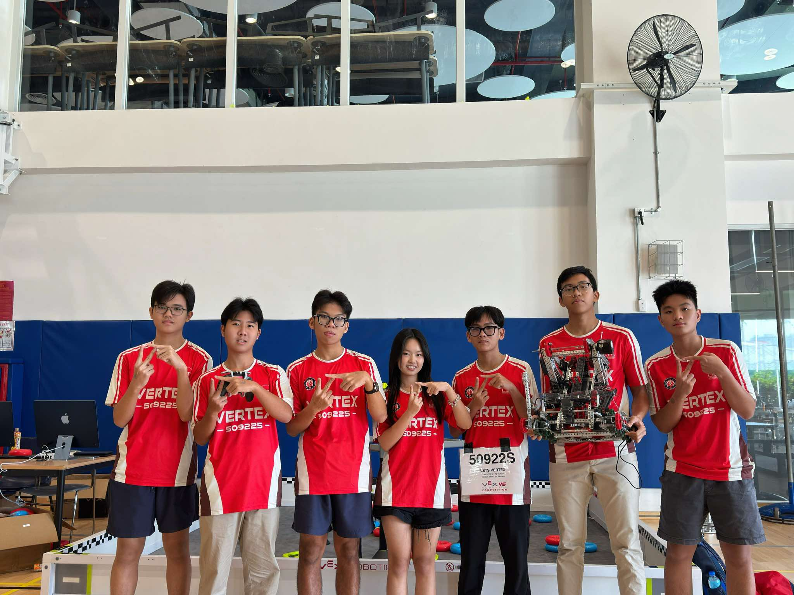

LEARNING HOW TO BUILD
My first real VEX season.
I started by building more freely than systematically. That made mechanisms hard to revise and taught me why CAD, planning, documentation, and drivetrain fundamentals matter before the robot is already assembled.
Open season 01 ↗
01ROBOT V1 · EARLY BUILDThe machine before the mindset shift.An early robot version that captures the fast, hardware-first way I entered VEX.

02COMPETITION · VERTEX 509225The season became a team story.One image that captures the robot, the people, and the competition experience together.